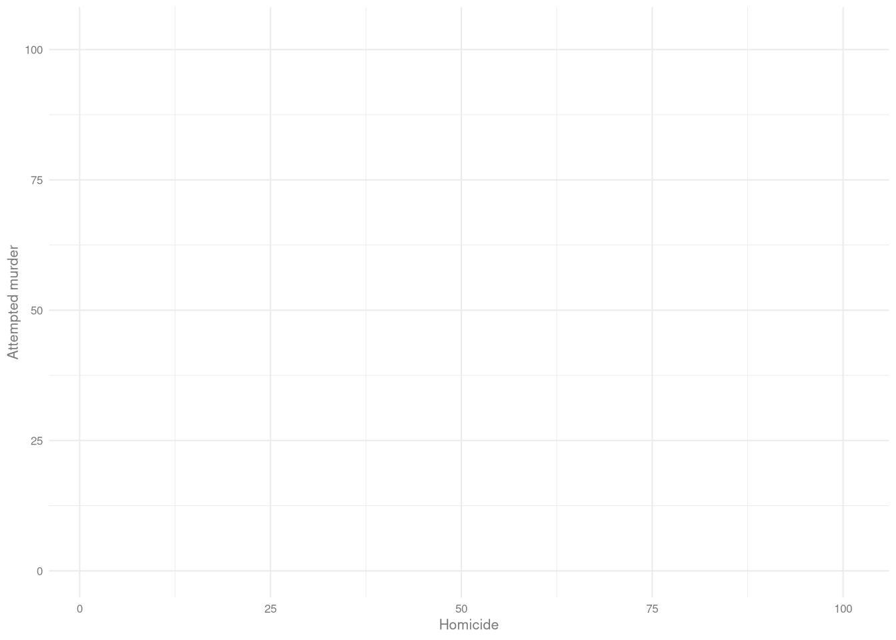
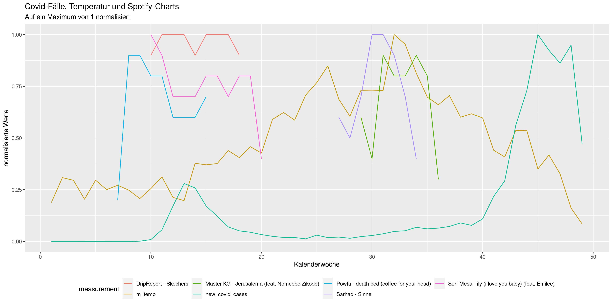
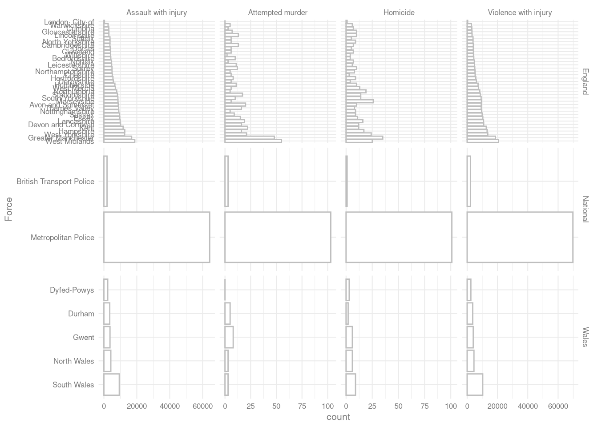
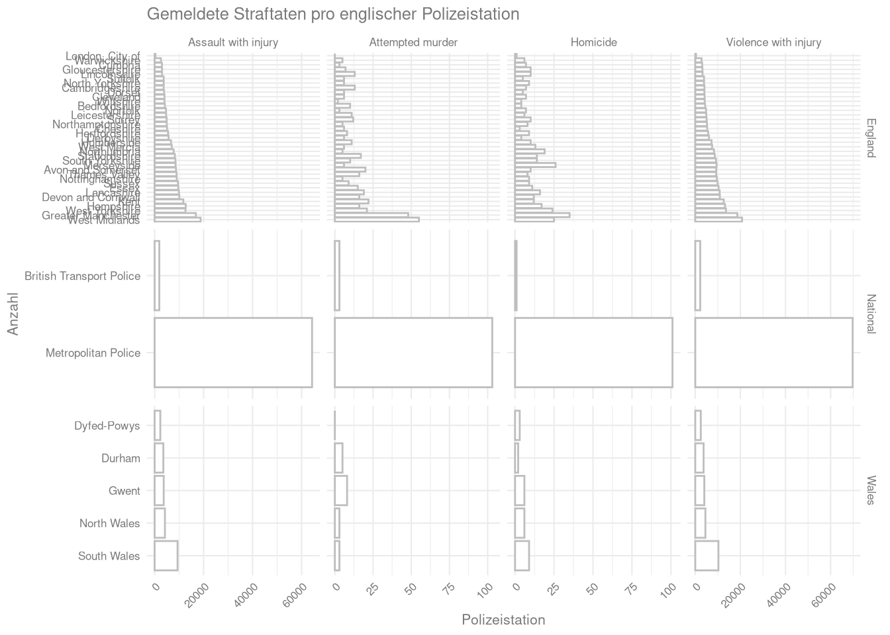

Daten darstellen
pivotieren von Datensätzen
Als Vorbereitung auf die Darstellung von Daten brauchen wir noch eine Funktion.
Für das Grafikpaket, das wir benutzen wollen, müssen die Daten im long format vorliegen. Das heißt, dass jede Variable eine Spalte und jede Zeile eine Beobachtung darstellt.
Insbesondere müssen wir darauf achten, dass alle Werte, die wir zum Beispiel an einer Achse darstellen wollen in einer Variable vorliegen.
Als Beispiel wollen wir den 'crime'-Datensatz pivotieren. Um das ganze übersichtlicher zu halten, bereiten wir den Datensatz aber noch ein bisschen vor.
Wir wollen dafür
- Den Datensatz einlesen
- Die Spalten
Force,HOMICIDE,Attempted murder,Violence with injuryundAssault with injuryeinlesen. - Die Mord-Spalte so umbenennen, dass der Name in das restliche Schema passt.
- Die
Total-Zeile ausschließen.
Wie machen wir das?
library(tidyverse)
crime <- read_delim("data/crime_plot.csv",
";", escape_double = FALSE, trim_ws = TRUE) %>%
select(Force,HOMICIDE,Country,`Attempted murder`,
`Violence with injury`, `Assault with injury`) %>%
rename('Homicide' = 'HOMICIDE') %>%
filter(Force != 'Total')
glimpse(crime)## Rows: 44
## Columns: 6
## $ Force <chr> "Avon and Somers…
## $ Homicide <dbl> 10, 4, 1, 7, 3, …
## $ Country <chr> "England", "Engl…
## $ `Attempted murder` <dbl> 20, 10, 3, 13, 6…
## $ `Violence with injury` <dbl> 9293, 4368, 2200…
## $ `Assault with injury` <dbl> 8716, 4171, 1905…Um den Datensatz in ein längeres Format zu pivotieren, benutzen wir die pivot_longer-Funktion.
Wir erstellen dafür hier einen zweiten Datensatz
crime_long <- crime %>%
pivot_longer(
cols = c('Homicide','Attempted murder',
'Violence with injury', 'Assault with injury'),
names_to = 'offence',
values_to = 'count')
glimpse(crime_long)## Rows: 176
## Columns: 4
## $ Force <chr> "Avon and Somerset", "Avon and …
## $ Country <chr> "England", "England", "England"…
## $ offence <chr> "Homicide", "Attempted murder",…
## $ count <dbl> 10, 20, 9293, 8716, 4, 10, 4368…Vorbereitung für die grafische Darstellung
Abschließend fügen wir noch für später Auswertungen eine Variable hinzu, die codiert, ob die Straftat in einer Verletzung ausgegangen ist oder versuchter/erfolgreicher Mord ist. Dafür benutzen wir die str_detect-Funktion.
crime_long <- crime_long %>%
mutate(type_of_offence = ifelse(str_detect(offence, 'injury'),
'injury',
'(attempted) homicide'))
glimpse(crime)## Rows: 44
## Columns: 6
## $ Force <chr> "Avon and Somers…
## $ Homicide <dbl> 10, 4, 1, 7, 3, …
## $ Country <chr> "England", "Engl…
## $ `Attempted murder` <dbl> 20, 10, 3, 13, 6…
## $ `Violence with injury` <dbl> 9293, 4368, 2200…
## $ `Assault with injury` <dbl> 8716, 4171, 1905…Aufgabe 1
Lesen Sie die zwei in den letzten Aufgaben abgespeicherten ‘temp_covid.csv’ und ‘chart_overview.csv’ ein.
Entfernen Sie zuerst die Platzierungs-Spalte aus dem Chart-Datensatz.
Legen Sie dann einen Vektor mit den Namen der 5 erfolgreichsten Songs über das ganze Jahr an. Berechnen Sie dafür zuerst den Summen-Score pro Song.
Die nächsten, grau hinterlegten Schritte sind etwas fortgeschritten, Sie können sie überspringen indem Sie den ‘chart_top5.csv’-Datensatz einlesen.
Mit der arrange-Funktion können Sie sich dann die Songs nach Erfolg sortieren lassen. Probieren Sie die ersten beiden Beispiele auf der Hilfeseite aus um ein Gefühl für die nötige Funktion zu bekommen.
Die 5 erfolgreichsten Songs können Sie sich dann per Indizierung ausgeben lassen.
Nutzen Sie im nächsten Schritt den erstellten Vektor um den Chart-Datensatz zu filtern. Lesen Sie dafür den Hilfe-Eintrag des %in%-Operators.
Pivotieren Sie den Datensatz abschließend derart, dass jedem der Songs eine Spalte zugeordnet ist. Lesen Sie dazu die Hilfeseite der pivot_wider-Funktion.
Fügen Sie den Datensatz anschließend dem Covid-Temperatur-Datensatz an. Alle Zeilen aus dem Covid-Temperatur-Datensatz sollen erhalten bleiben.
Standardisieren Sie anschließend die mittlere Temperatur und die neuen Fälle derart, dass sie sich auch in ienem Bereich zwischen 0 und 1 bewegen.
Pivotieren Sie den gesamten Datensatz zum Schluss ins long-Format, so dass eine Spalte mit der Kalenderwoche, eine Spalte mit dem Variablennamen und eine Spalte mit den Chart-Scores übrigbleibt.
ggplot2
Eins der stärksten Argumente für die Benutzung von R und dem tidyverse ist das Grafik-Paket ggplot2.
Mit ein bisschen Gewöhnung macht ggplot2 es sehr einfach, hübsche Grafiken zu erstellen.
Die Syntax für ggplot2 ist dabei aber ein bisschen anders als die, die wir bisher von R gewohnt sind.
Dafür müssen wir zuerst eine Grundebene erstellen, auf die wir die Grafik anschließend layern können.
Diese Grundebene kann man sich ein bisschen wie eine leere Leinwand vorstellen. Dabei wird beim Erstellen der ‘Leinwand’ direkt festgelegt, auf welchen Daten die Abbildung basieren soll und welche Variablen wie dargestellt werden sollen.
Diese Leinwand erstellt man mit der ggplot-Funktion, in die man, wie in die meisten tidyverse-Funktionen, pipen kann.
Als zweites Argument nach dem Datensatz erwartet ggplot eine Angabe, wie welche Variablen dargestellt werden sollen. Diese Angaben müssen mit aes für aesthetics erstellt werden:
crime_plot <- crime %>%
ggplot(aes(x = Homicide, y = `Attempted murder`))Diese ‘leere Leinwand’ sieht so aus:
crime_plot
aesthetics
Auf diese Leinwand können wir dann eine Reihe von verschiedenen grafischen Elementen legen, den so genannten geoms. Das einfachste Beispiel auf der eben erstellten Leinwand ist ein Scatterplot.
Um der Leinwand Punkte hinzuzufügen, addieren wir einfach einen geom_point-Layer auf die Grafik:
crime_plot + geom_point()
Dieser sehr einfache Graph ist aber natürlich nicht alles. Die aes- und die ggplot-Funktionen können noch eine ganze Reihe an weiteren grafischen Parametern annehmen.
Die für unseren Graphen attraktivsten sind:
size- für die Punktgrößecolor- für die Farbe der Punkteshape- für die Wahl der Symbole
Jedes geom hat auch die Möglichkeit, Daten und aesthetics zu nehmen. Wenn keine gesetzt werden, werden einfach die des ursprünglichen ggplot-Aufrufs übernommen.
crime_plot + geom_point(aes(size = `Violence with injury`,
color = `Assault with injury`))
Die aus mehreren Worten bestehenden Variablennamen sind mit Gravis eingeschlossen, nicht mit Anführungszeichen!
Wenn aesthetic-Argumente außerhalb der aes-Funktion gesetzt werden, geben sie einen konstanten Wert für das geom an:
crime_plot + geom_point(aes(size = `Violence with injury`),
color = 'purple')
geoms
Um andere Grafiken zu erstellen, ersetzt man einfach das geom_point-geom durch ein anderes.
Dabei kann es natürlich nötig sein, eine andere Leinwand zu definieren.
Histogramme, Boxplots und Barcharts:3
crime %>%
ggplot(aes(x = Homicide)) +
geom_histogram(fill = 'white',
color = 'black',
binwidth = 3)
crime_long %>%
ggplot(aes(y = count,
x = offence)) +
geom_boxplot()
crime_long %>%
ggplot(aes(y = count,
x = offence
)) +
geom_col()
Aufgabe 2
Für die Darstellung ist der standardisierte long-Format-Datensatz aus der letzten Aufgabe nötig.
Sollten Sie nicht ganz zum Ende der Aufgabe gekommen sein, können Sie auch den darst_aufg_1.csv-Datensatz einlesen.
Erstellen Sie den folgenden Graphen:

Finden Sie dafür im Hilfe-Eintrag der theme- Funktion heraus, wie Sie die Position der Legende verändern können und im Hilfeeintrag der labs-Funktion wie Sie die Beschriftungen anpassen können.
finetuning
Der Barchart ist ein guter Anlass, den Plot zu optimieren.
Uns stehen die folgenden Informationen zur Verfügung:
glimpse(crime_long)## Rows: 176
## Columns: 5
## $ Force <chr> "Avon and Somerset", "A…
## $ Country <chr> "England", "England", "…
## $ offence <chr> "Homicide", "Attempted …
## $ count <dbl> 10, 20, 9293, 8716, 4, …
## $ type_of_offence <chr> "(attempted) homicide",…Um ein bisschen mehr Spielraum zu haben, gibt es in ggplot facets.
facets!
Facets lassen uns einfach mehrere Subplots definieren, um zusätzlich zu den in unseren geoms und aes-Aufrufen definierten Aspekten Subgruppen darzustellen.
crime_long %>%
ggplot(aes(y = count,
x = Force)) +
geom_col(fill = 'white',
color = 'grey') +
facet_grid(offence~Country, ## als facets mit Straftat in Zeilen und Landesteil in Spalten
scales = 'free') ## mit individuellen Skalen
Wie können wir das noch verbessern?
additional tweeks
Zuerst sortieren wir die Polizeistationen in absteigender Reihenfolge der jeweiligen mittleren Fallzahlen.
Dafür benutzen wir das forcats-Paket aus dem tidyverse. Ein Paket, dass Funktionen zum Verändern und Sortieren von Faktoren bietet.
crime_long %>%
mutate(
Force = as_factor(Force), ## zuerst in Faktor umwandeln
Force = fct_reorder(Force, count,.fun = mean, .desc = T)) %>% ## dann absteigend sortieren
ggplot(aes(y = count,
x = Force)) +
geom_col(fill = 'white',
color = 'grey') +
facet_grid(offence~Country,
scales = 'free')
Um die einzelnen Stationen besser lesbar zu machen, können wir noch die Achsen austauschen.
crime_long %>%
mutate(
Force = as_factor(Force), ## zuerst in Faktor umwandeln
Force = fct_reorder(Force, count,.fun = mean, .desc = T)) %>% ## dann absteigend sortieren
ggplot(aes(y = count,
x = Force)) +
geom_col(fill = 'white',
color = 'grey') +
coord_flip() +
facet_grid(Country ~ offence,
scales = 'free')
themes
Und zuletzt die Achsenbeschriftungen anpassen und die x-Achsen-Beschriftung rotieren.
Die Achsenbeschriftungen und Überschriften lassen sich mit der
labs-Funktion festlegenDie Ausrichtung der Beschriftung (wie die meisten grafischen Aspekte) lassen sich mit der
theme-Funktion fine-tunen
crime_long %>%
mutate(
Force = as_factor(Force), ## zuerst in Faktor umwandeln
Force = fct_reorder(Force, count,.fun = mean, .desc = T)) %>% ## dann absteigend sortieren
ggplot(aes(y = count,
x = Force)) +
geom_col(fill = 'white',
color = 'grey') +
coord_flip() +
facet_grid(Country ~ offence,
scales = 'free') +
labs(x = 'Anzahl',
y = 'Polizeistation',
title = 'Gemeldete Straftaten pro englischer Polizeistation') +
theme(axis.text.x = element_text(angle = 45,
hjust = 1))
Aufgabe 3
Nutzen Sie den Hilfe-Eintrag der theme-Funktion und der scale_color_manual-Funktion, sowie eine beliebige Anzahl an aesthetics, um den Graph aus der vorigen Aufgabe so sehr zu verunstalten wie Ihnen irgendwie möglich ist.
Grafiken exportieren
Um die Auflösung zu verbessern können wir jetzt noch die Grafik mit anderen Seitenverhältnissen exportieren. Die ggsave-Funktion lässt uns einfach Grafiken in beliebigen Formaten exportieren.
ggsave(filename = 'imgs/police_stations.png',
width = 50,
height = 100,
units = 'cm')
Aufgaben Teil 3
Aufgabe 1
Lesen Sie die zwei in den letzten Aufgaben abgespeicherten ‘temp_covid.csv’ und ‘chart_overview.csv’ ein.
Entfernen Sie zuerst die Platzierungs-Spalte aus dem Chart-Datensatz.
Legen Sie dann einen Vektor mit den Namen der 5 erfolgreichsten Songs über das ganze Jahr an. Berechnen Sie dafür zuerst den Summen-Score pro Song.
Die nächsten, grau hinterlegten Schritte sind etwas fortgeschritten, Sie können sie überspringen indem Sie den ‘chart_top5.csv’-Datensatz einlesen.
Mit der arrange-Funktion können Sie sich dann die Songs nach Erfolg sortieren lassen. Probieren Sie die ersten beiden Beispiele auf der Hilfeseite aus um ein Gefühl für die nötige Funktion zu bekommen.
Die 5 erfolgreichsten Songs können Sie sich dann per Indizierung ausgeben lassen.
Nutzen Sie im nächsten Schritt den erstellten Vektor um den Chart-Datensatz zu filtern. Lesen Sie dafür den Hilfe-Eintrag des %in%-Operators.
Pivotieren Sie den Datensatz abschließend derart, dass jedem der Songs eine Spalte zugeordnet ist. Lesen Sie dazu die Hilfeseite der pivot_wider-Funktion.
Fügen Sie den Datensatz anschließend dem Covid-Temperatur-Datensatz an. Alle Zeilen aus dem Covid-Temperatur-Datensatz sollen erhalten bleiben.
Standardisieren Sie anschließend die mittlere Temperatur und die neuen Fälle derart, dass sie sich auch in ienem Bereich zwischen 0 und 1 bewegen.
Pivotieren Sie den gesamten Datensatz zum Schluss ins long-Format, so dass eine Spalte mit der Kalenderwoche, eine Spalte mit dem Variablennamen und eine Spalte mit den Chart-Scores übrigbleibt.
Aufgabe 2
Für die Darstellung ist der standardisierte long-Format-Datensatz aus der letzten Aufgabe nötig.
Sollten Sie nicht ganz zum Ende der Aufgabe gekommen sein, können Sie auch den darst_aufg_1.csv-Datensatz einlesen.
Erstellen Sie den folgenden Graphen:
Finden Sie dafür im Hilfe-Eintrag der theme- Funktion heraus, wie Sie die Position der Legende verändern können und im Hilfeeintrag der labs-Funktion wie Sie die Beschriftungen anpassen können.
Aufgabe 3
Nutzen Sie den Hilfe-Eintrag der theme-Funktion und der scale_color_manual-Funktion, sowie eine beliebige Anzahl an aesthetics, um den Graph aus der vorigen Aufgabe so sehr zu verunstalten wie Ihnen irgendwie möglich ist.
Für über eine Übersicht über mehr mögliche geoms lässt sich das ggplot2-cheatsheet empfehlen.↩︎